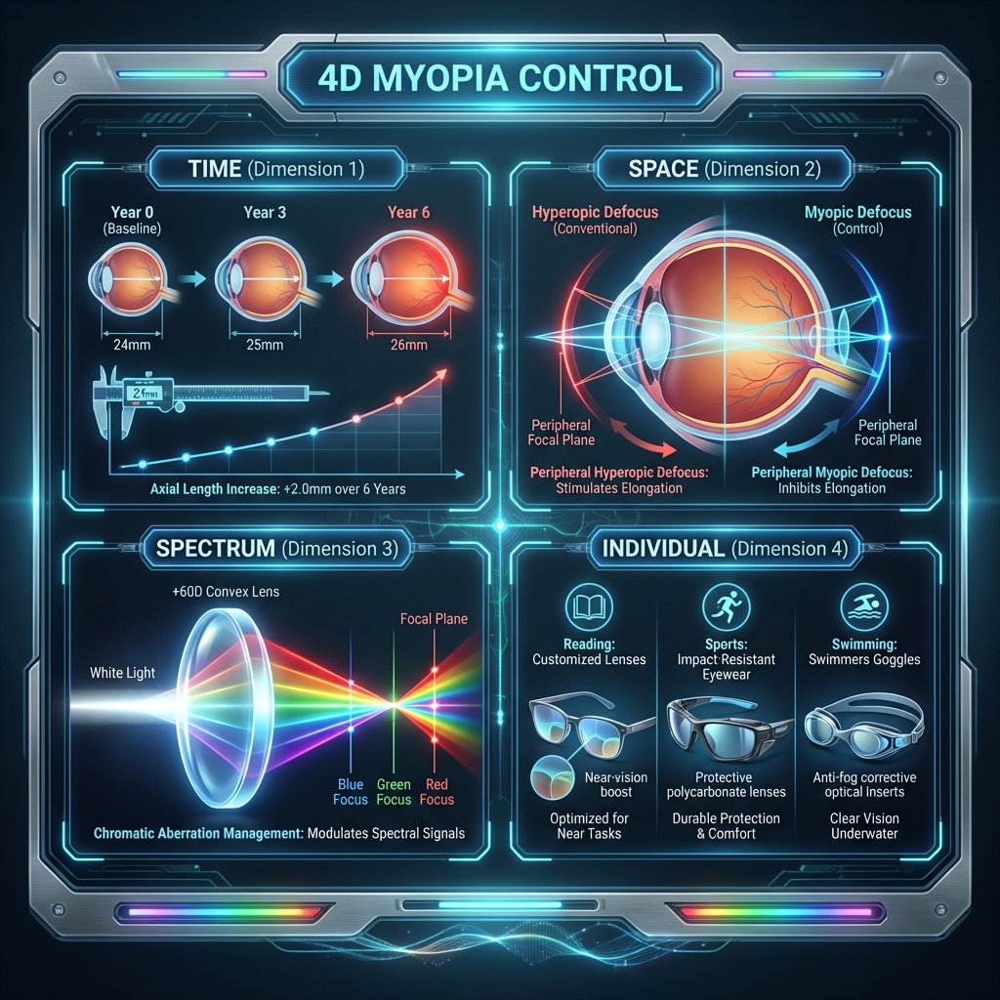
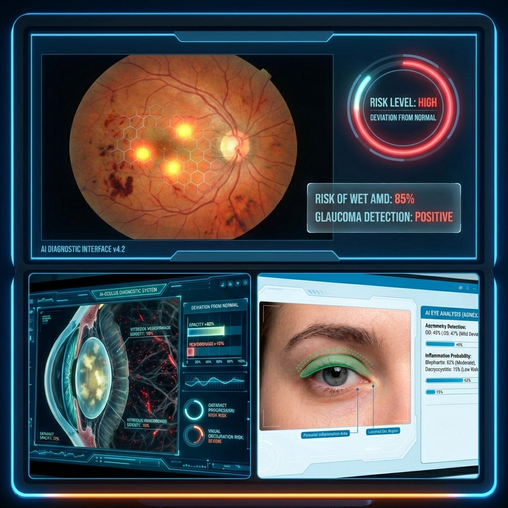

Vision Science & Biomedical Engineering
Challenging the Limits of
Vision Rehabilitation & Augmentation
Bridging precision optics, AI-driven biomarker analysis, and personalized vision solutions to advance ocular science.
01
Precision Optics MeasurementCapturing micro-level precision data, from 3D corneo-scleral shapes to minute pupil tremors, using Infrared Structured Light and high-speed ROI tracking systems.
02
AI Biomarker AnalysisAnalyzing collected visual data with proprietary deep learning models to detect early signs of degenerative brain diseases and ocular pathologies as non-invasive digital biomarkers.
03
Personalized Vision SolutionsProviding 4D myopia control and personalized vision rehabilitation solutions by integrating individual ocular optical spectra and lifestyle data.
What We Study
Research Areas
4D Myopia Control
Researching next-generation 4D myopia control technology using ultra-precision ray tracing simulations that consider peripheral retinal profiles and refraction at ocular media boundaries.
AI Disease Prediction
Developing AI systems that predict the probability of systemic diseases by integrating multi-dimensional ocular signals such as retinal vessels, strabismus angle, ptosis, and pupillary response.
Precision 3D Reconstruction

Building a core shape database for custom scleral lens prescriptions and artificial cornea fabrication by precisely measuring and reconstructing 3D profiles of the cornea and sclera.